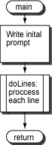

Four levels deep:
main calls doLines which calls convert
which calls conCh.
main Subroutine
An
advantage of modular programming is that each subroutine
can be displayed and explained independently of the others.
Here is the design of main.
To simplify the discussion, branch delays and load delays have been turned OFF in SPIM.

.text
.globl main
main:
?????? # what goes here?
la $a0,mainPr # prompt the user
li $v0,4 # service 4
syscall
jal doLines # process lines of input
?????? # what goes here?
jr $ra # return to OS
.data
mainPr: .ascii "Type each line of text followed by ENTER.\n"
.asciiz "Type Q at the start of a line to finish.\n"
According to the
main need to push and later pop the return address?